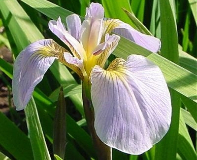
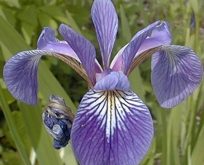
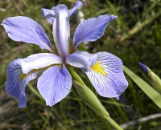

A partir de données observées et de quelques règles simples notre but est d’apprendre à faire prendre des décisions sur de nouvelles observations. Par exemple, apprendre à reconnaître des visages, ou la langue dans laquelle est écrite un document.
Cette discipline s’appelle le data mining ou machine learning. Elle est en très forte expansion, menée par des compagnies comme Google.
| L’iris Setosa | L’iris Versicolor | L’iris Virginia |
|---|---|---|
|  |  |  |
Dans les années 30, Edgar Anderson a mesuré 4 attributs de fleurs Iris:
|
|
Pouvons-nous reconnaître les 3 espèces d’Iris, Setosa, Versicolor et Virginia, à partir de ces attributs?
Les données iris viennent avec scikit-learn:
>>> from sklearn import datasets
>>> iris = datasets.load_iris()